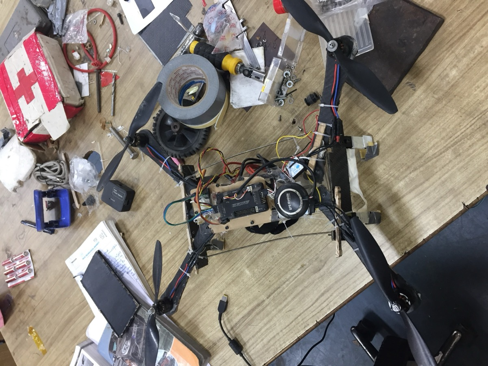
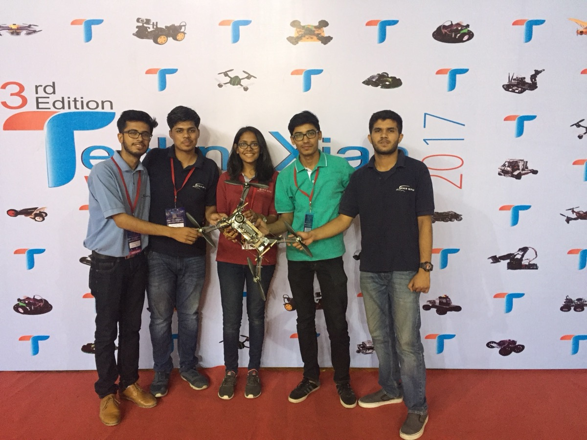

Robotics
Unmanned Aerial Vehicles


IRL Technoxian Quadcopter Challenge
We built an indigenous Light-Weight Sandwich Composite Multirotor System. As the Avionics Technician on the project, I was responsible for designing, integrating and testing the quadcopter's propulsion system and tuning the Naze flight controller.


AUVSI Student Unmanned Air Systems Competition
Developed a customized Ardupilot firmware algorithm to capture the off-axis target using 2-axis gimbal stabilization for Lazarus. Did extensive flight testing of this feature for the AUVSI-SUAS competition.
Robotics and Machine Intelligence Laboratory
Real-time object recognition system for autonomous navigation. Used the YOLO architecture and ZED stereo camera on Nvidia's Jetson TX1 module to develop a system that provides real-time information about the identity of objects and their distance from the car using audio.